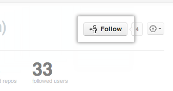
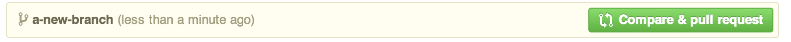
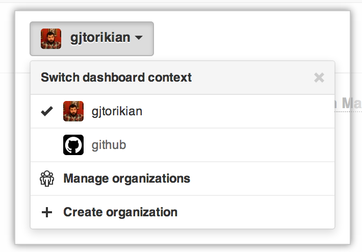
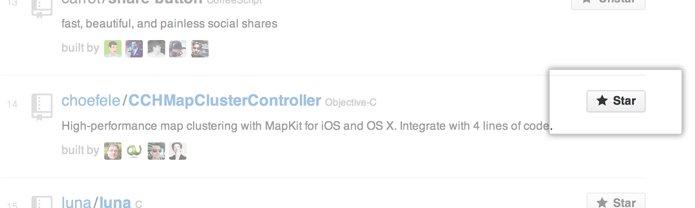

If you've found yourself on this page, we're assuming you're brand new to Git and GitHub. This guide will walk you through the basics and explain a little bit about how everything works along the way.
Follow A Friend
One of the great features on GitHub is the ability to see what other people are working on and who they are connecting with. When you follow someone, you'll get notifications on your dashboard about their GitHub activity.
Step 1: Pick a friend.
Why not follow one of these cool people from GitHub (including their pet tanuki!):


Step 2: Follow that friend (in a non-creepy way)
Once you are on one of their pages, click the "follow" button.

Congratulations! You are now following a friend.
Watch A Project
At some point you may want to stay up-to-date with a specific project. We've made this easy to do.
Watch a project
Our friend the Octocat has a project called Hello World that we'd like to watch.
Once you are on the project page, you will notice there is a "watch" button at the top of the page. Click on it.

Congratulations! You are now watching the Hello World project. If the Octocat updates it, you will see what happened in your dashboard.
More Things You Can Do
You've done some of the most basic social interaction GitHub has to offer, but don't stop there! Check out these other social features:
Pull Requests

You may find yourself wanting to contribute to someone else's project, whether to add features or to fix bugs. After making changes, you can let the original author know about them by sending a pull request.
Issues
When you are collaborating on a project with someone, you sometimes come across problems that need to be fixed. To help you keep track of these problems, each GitHub repository has a section called Issues. For an example, check out the issues for the Spoon-Knife repository.
Organizations

Have you found yourself wishing you could collaborate with multiple developers on one project? You can manage everyone with Organizations! With an organization you can establish teams with special permissions, have a public organization profile, and keep track of activity within the organization.
Explore

Discover interesting projects from across GitHub in the Explore GitHub and Trending sections. You can then star projects that you find interesting and want to come back to later—just visit Your stars page to see all your starred projects.
Celebrate
Congratulations! You are quite the socialite.
- Set Up Git
- Create A Repository
- Fork A Repository
- Be Social